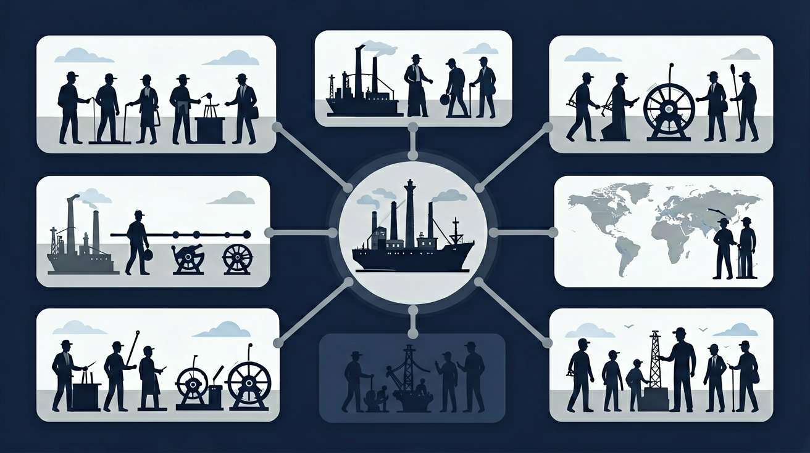

蒸汽机如何改变世界

文艺复兴和启蒙运动解放了思想，新航路开辟让世界连为一体，英国确立了君主立宪制。
为什么18世纪的英国突然"开挂"？为什么一个岛国能在百年内成为世界工厂？为什么人类延续几千年的手工劳作，突然被机器取代？这一切的转折点，就是工业革命。
回到18世纪的英国，追踪从飞梭到蒸汽机的技术链条，理解机器生产如何取代手工劳动，以及这场革命如何重塑了世界格局。
2 道小题，帮你确认是否准备好了。答完会给出个性化学习建议。
工业革命前，英国的手工工场与后来的工厂最主要的区别是什么？
17-18世纪，英国相比欧洲大陆国家，最有利于工业发展的制度条件是？
18世纪中期，英国商品越来越多地销往海外，手工工场的生产供不应求。棉纺织业作为新兴行业，受传统行会限制少，最容易采用新技术。
拖动滑块，感受飞梭如何让织布效率翻倍：
飞梭（右）比传统手工（左）快约2倍，这导致了棉纱短缺，倒逼纺纱技术革新
瓦特不是蒸汽机的发明者，而是改良者。他在纽可门蒸汽机基础上，增加了分离冷凝器，使热效率提高3倍以上，让蒸汽机从只能抽水变成可以驱动各种机器的万能动力机。
| 对比项 | 纽可门蒸汽机 | 瓦特蒸汽机 |
|---|---|---|
| 热效率 | 约1% | 约3% |
| 用途 | 只能抽水 | 驱动各种机器 |
| 燃料消耗 | 极高 | 降低75% |
蒸汽机提供了不受地理限制的动力，工厂可以建在任何地方。到19世纪，传统的手工工场逐渐被大工厂替代，现代工厂制度最终确立。
点击地图上的标记，了解工业革命如何从英国扩散到欧洲和北美：
点击时代按钮切换疆域版图；悬停高亮边界；点击红色城市标记查看详情。
1814年，斯蒂芬森发明了第一台实用蒸汽机车"布拉策号"。1825年，他驾驶"旅行者号"在斯托克顿—达灵顿铁路上试车成功，人类进入铁路时代。
| 领域 | 影响 |
|---|---|
| 经济 | 降低运输成本，扩大市场范围，促进资源调配 |
| 社会 | 人口流动加快，城市化进程加速 |
| 时间观念 | 标准时间确立（格林威治时间推广） |
| 军事 | 军队和物资快速调动 |
工业革命的本质是能源革命。人类从依赖人力、畜力、水力、风力，转向依赖煤炭驱动的蒸汽机。试试下面的模拟器，感受不同能源的功率差异：
ⓘ 由 PhET Interactive Simulations（科罗拉多大学 · CC-BY 4.0）提供
| 条件 | 具体表现 |
|---|---|
| 政治前提 | 君主立宪制确立，政局稳定，保护私有财产 |
| 资本积累 | 殖民掠夺、海外贸易、圈地运动 |
| 劳动力 | 圈地运动使农民失去土地，成为自由劳动力 |
| 技术积累 | 手工工场分工精细，技术工人丰富 |
| 市场扩大 | 殖民扩张带来广阔海外市场 |
| 资源丰富 | 煤炭、铁矿资源丰富 |
生产力：机器生产取代手工劳动，人类进入"蒸汽时代"
生产关系：工厂制度确立，工业资产阶级和工业无产阶级形成
社会结构：城市化加速，社会日益分裂为两大对立阶级
世界格局：英国成为"世界工厂"，东方从属于西方
环境问题：煤炭大量使用导致空气污染（伦敦"雾都"）
| 对比项 | 农业革命 | 工业革命 |
|---|---|---|
| 时间 | 约1万年前 | 18世纪60年代 |
| 核心变化 | 从采集狩猎到农耕畜牧 | 从手工生产到机器生产 |
| 能源基础 | 人力、畜力 | 煤炭、蒸汽 |
| 社会形态 | 农业社会 | 工业社会 |
| 影响深度 | 人类定居，文明起源 | 全球化，现代世界形成 |
积极遗产：现代工厂制度、铁路网络、城市化、科技创新精神
消极遗产：环境污染、工人剥削、殖民扩张、贫富分化
历史启示：技术革命是一把双刃剑，需要在发展中解决发展带来的问题。今天的人工智能革命，也面临着类似的机遇与挑战。
复制提示词到 AI 学伴，生成「工业革命」的时间轴或事件提纲；也可以上传你手绘的示意图，请 AI 学伴点评。
复制后可粘贴到 AI 学伴继续对话。
3 道题检验学习效果，答完生成结课报告。
工业革命开始的标志是？
瓦特改良蒸汽机的最大贡献是？
有人说："工业革命只有好处，没有坏处。"你同意吗？请说明理由。
不同意。工业革命是一把双刃剑。
积极影响：极大提高了生产力，人类进入蒸汽时代；工厂制度确立，现代工业体系形成；铁路等交通革新加强了世界各地联系；城市化进程加速。
消极影响：环境污染严重（伦敦成为"雾都"）；工人阶级受到残酷剥削，工作条件恶劣；贫富分化加剧；殖民扩张给亚非拉人民带来灾难。
结论：我们应该辩证看待工业革命，既要肯定其推动历史进步的作用，也要正视其带来的社会问题，并在今天的技术革命中引以为戒。
瓦特是改良蒸汽机，不是发明蒸汽机。工业革命开始的标志是珍妮机，不是蒸汽机。这是中考最高频的易错点！